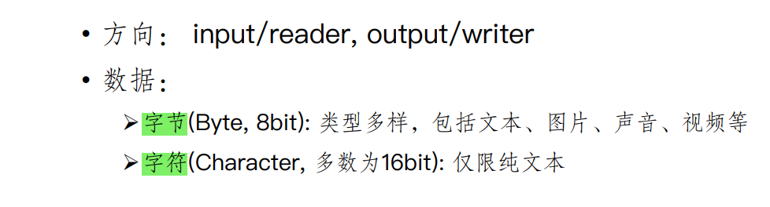
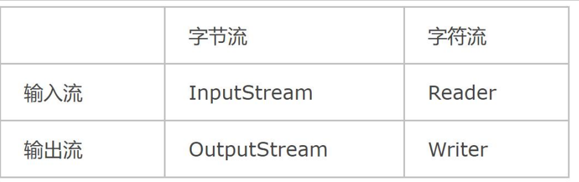
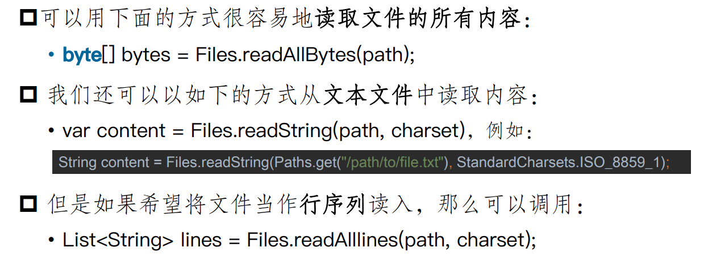
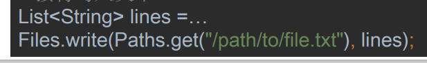

流与输入输出
流的分类
- 按照方向：输入流、输出流
- 按照流的数据单位：字节流和字符流
- 按照功能：节点流（从一个特定的节点读写数据，与数据源直接相连）和处理流
Java系统流
三个子类
- System.in:键盘
- System.out:控制台
- System.err:控制台
System.in
读取控制台输入
import java.io.*
BufferReader br = new BufferReader(new InputStreamReader(System.in))
br.read()//读取一个字符
br.readline//读取一个一行字符串
文件的输入与输出FileInputStream和FileOutputStream
读取文件
创建文件输入流对象的两种方法 1.直接创建一个
InputStream f = new FileInputStream("url")
2.先创建一个文件对象，在根据该文件对象创建一个输入流对象
File f = new File("url")
InputStream in = new FileInputStream(f)
写入文件
在流打开文件输出前，该文件不存在，则流会创建一个文件 1.直接创建一个文件输出流对象
OutputStream f = new FileOutputStream("url")
2.先创建一个文件对象，再据此创建一个文件输出流对象
File f = new File("url")
OutputStream fout = new FileOutputStream(f)
输入输出实例
// 创建文件对象
File f = new File("url");
//创建文件输出流
FileOutputStream fop = new FileOutputStream(f);
//创建Write对象
OutputStreamWriter writer = new OutputStreamWriter(fop, "UTF-8");
//写入缓冲区
writer.append("name");
write.append("\r\n");
//关闭写入流，将缓冲区内容写入文件
write.close()；
//关闭输出流，释放系统资源
fop.close();
//创建文件输入流
FileInputStream fip = new FIleInputStream(f);
//创建Reader对象
InputStreamReader reader = new InputStreamWriter(fip, "UTF-8")//默认是系统编码
StringBUffer sb = new StringBuffrt();
while(reader.ready()){
sb.append((char)reader.reader());//一定需要char，因为返回的是unicode int编码
}
reader.close();
fip.close();
流家族
分类
 读入word文档是读如字节流
四大流家族
 - 所有流都可关闭 - 字节流与字符流可以互相转化
Stream层次结构
- 读取但个字节或字节数组
- 还可以读如ZIP
Reader和Writer
- 对于Unicode文本可以使用其子类
InputStreamReader和OutputStreamWriter将基于字节的输入输出流转化为基于字符的对象
操作文件
Path
Files
受内存限制，只能读写小文件；对于大文件还是需要文件流，每次只读写一部分内容
读

写
- 写入一个字符串到文件中：
Files.writeString(path, content, chatset); - 向指定文件追加内容:
Files.write(path, content.getBytes(charset), StandardOpenOption.APPEND); - 将一个行的集合写出到文件中:
Files.write(path, lines, charset);
创建文件和目录
复制，移动和删除文件
对象输入输出与序列化
数据访问对象模式
DAO：把低级的数据访问操作从高级的业务服务中分离出来
三个参与者
- 数据访问对象的接口：定义了在一个模型对象上要执行的标准操作
- 数据访问的实体类：实现了上述接口，负责从数据源获取数据
- 模型对象/数值对象：简单的普通对象，包含了get/set方法。
优缺点：
- 优点： 隔离数据层：由于新增了DAO层，不会影响到服务或者实体对象与数据库交互，发生错误会在该层进行异常抛出
- 缺点：多了一层，代码量增加